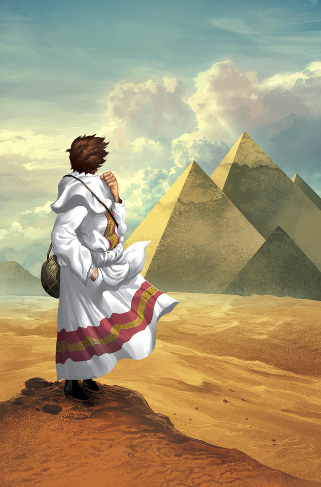

"When you want something, all the universe conspires in helping you to achieve it."
The Alchemist is a novel about a young shepherd named Santiago who dreams of finding a treasure in the Egyptian pyramids. On his journey, he meets various people who help him understand the importance of following his dreams and listening to his heart.
The book is a philosophical adventure that explores themes of destiny, personal legend, and self-discovery.
The Alchemist has been widely praised for its inspirational message and has sold over 65 million copies worldwide. It has influenced many readers and has been recommended by celebrities and thought leaders.
The book is considered a modern classic and continues to inspire people in their journey to find their own "Personal Legend."
The novel revolves around several key themes:
You can read or purchase The Alchemist from the following sources: